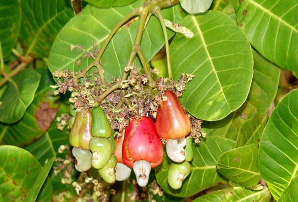

| Home |
Cashew |
| 1. Stem and Root Borer |
| 2. Tea Mosquito Bug |
| 3. Leaf Miner |
| 4. Shoot and Blossom Webber |
| 5. Apple Borer |
| 6. Inflorescence Caterpillar |
| 7. Thrips |
| 8. Bark Borer |
| 9. Slug Caterpillar |
| 10. Leaf Feeder |
| 11. Looper |
| 12. Apple and Nut Borer |
| Questions |
| Download Notes |
Pests of Cashew
The cashew tree is attacked by many pests, but about half a dozen of them cause serious damage when they get favourable conditions. Among all insect pests cashew stem and root borer and tea mosquito bug pose a severe threat to cashew growers.
